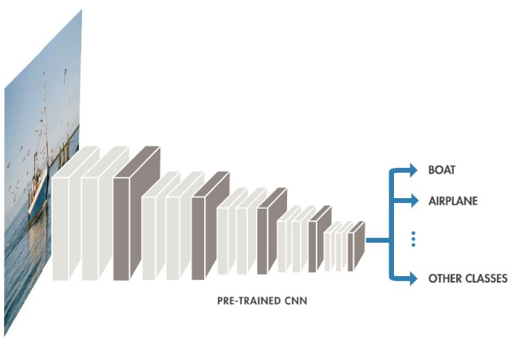

Do convolutional neural networks mimic the human visual system?
Investigating mental image representations
 Credit: Arvinder Singh (IG: @sardarchitect)
Credit: Arvinder Singh (IG: @sardarchitect)
Richard Feynman once said “What I cannot create I do not understand.” Therefore, to truly understand the human visual system, we must learn to create it. One of the most effective forms of such creation is the Convolutional Neural Network (CNN) system to mimic the human visual system. Computer Vision models that use the CNN system have achieved near human-level performances on tasks such as image classification and object detection. There is no question the CNNs have shown us mind-blowing performance, but the question is: do they actually resemble the biological visual system? Are we really creating it? As a quest to answer this question, in this article we will explore the similarities and differences between the CNNs and the biological visual system.
To start off, let’s explore the roots of the CNN - how does a CNN function and what are its capabilities? In simple terms, the CNN is able to learn features from images, for example - it is able to deduce if an image has a dog; it is able to deduce if the image is a desert, it can tell if an image is a painting. Let’s take a look at some example features that CNNs can learn to extract from an image. In the image underneath, we can see that for a baseball, the CNN meshes the unique features of a baseball such as rounded shape, stripes, into a filter image. This filter image is then used to cross check against input images to determine whether each input image contains a baseball. The same is done for dogs, clouds and buildings, etc, with their own respective filter images. This way, we can use CNNs for tasks such as classification (labeling an image to a group/class), object detection (detecting the presence of certain objects in an image), and image generation (imitating certain styles and patterns to generate unique images), among many other tasks.
Use of filters for detecting image features [1]
So now that we have an idea of how CNNs function, we can move on to discussing how its design compares to the biological visual system. The CNN is composed of image processing layers that deduce and pass down information from one layer to the next. At each layer, information of different abstractions is deduced. Generally, in the earlier layers, simpler and more basic ideas will be deduced while later layers will use the gathered information from the previous layers to deduce more complex ideas. The following figure lays down an example CNN - in the figure, a boat image is passed from the left end layer to the next until it reaches the right-most layer, where it classifies the class of the image; in this case, it should be “Boat”.

Layer Structure of a CNN [6]
Due to the way the layers learn more complex features the deeper into the network, we can call this a hierarchical learning structure. To see clearly what we mean by the complexity of features, we can observe the following figure. The first group shows the detection of edges - which are simpler features compared to the textures in the second group. The CNN layers detect such “textures” through the combination of “edges” detected in the previous layer. Likewise, the following layers learn patterns through combining textures, and so on and so forth, until the last layers learn the presence of certain objects. In this way, the complexity of features increases as we go deeper down the network, demonstrating a hierarchical learning mechanism.
Different complexity of learned features [1]
This hierarchical layer structure is actually also utilized in the visual cortex ventral pathway, which is a layerlike pathway consisting of the sequence LGN-V1-V2-V4-IT where each of them represents a certain information processing layer (Figure 4). As we proceed through the visual pathway, the features learned become more complex, just as in the CNN. The receptive visual field size increases as well, as larger receptive field suggests a more holistic and general feature in the image. In a way, this makes sense - to recognize a baseball, the network has to learn stripes and some circular shapes. Likewise, for a dog, the features might be the dog snouts, black and white eyes, furry texture, etc. Such features cannot be instantly detected in just a single step, but rather gathered throughout different layers’ learning, which forms the basis of hierarchical learning.
Human Visual Cortex Ventral Pathway [3]
In addition to the concept of hierarchical information processing in CNNs, another fundamental concept called pooling is utilized. Pooling is basically the idea of generalizing or approximating a set of values in an area into a smaller set of values. This concept is explained in the following figure. The input image is a grid of 16 values and pooling is applied on the image to result in a grid of 4 values; each of the 4 values are the maximum values taken from their respective areas represented by the color. By taking the maximum, we reduce the size of the information we are looking at and select the most important values that need to be paid attention to.
Pooling Mechanism [8]
To understand at the higher level, the pooling is used to aggregate information gathered into summarized information. This idea of aggregation allows for the hierarchical information processing - the basic features learned are aggregated and then the details are gotten rid of to learn high level features. Pooling reduces the dimension of the representation and “creates an invariance to small shifts and distortions”. Basically this means that switching an image around by slight pixel changes will not affect the information being deduced from the image. Through pooling, we eliminate repeated learning of similar features that are right next to each other in the image feature representation. Interestingly, this idea behind the pooling layer is found in the relation between simple and complex cells in the biological neural system, where simple cells simply evoke a response on each of their particular spatial locations, while complex cells seem to be pooling over responses from the simple cells and thus showing more spatial invariance in their responses.
No matter how neat CNN is in capturing visual information like the biological system, there are some outright flaws in it. One is the possibility of adversarial attacks, which involve hacking the CNN by slightly changing the pixel values of images in a way that is undetectable to a human eye but enough to fool the CNN to make faulty conclusions. An example is shown below, where the panda image is altered to be recognized as a gibbon by a CNN although there seems to be no difference to the human eye (Figure 6). This example shows how the CNN is perceiving ideas through meticulous attention to every single pixel in an image, which might not be the case with human visuals; for humans, perception likely happens through directly seeing the patterns and lines rather than individual pixels.
Adversarial Attack on CNN (OpenAI)
On the other hand, this makes us wonder, “Can the human visual system be hacked as well? Are there ways to fool our eyes although maybe to another species there isn’t noticeable change?” It turns out that there are ways to fool our visual perception as well through small image change. Researchers have found a way to generate images that are designed to tip the perception towards a different idea although there isn’t much change in the image composition. Look at the example below - the left image looks like a cat, but when altered slightly to form the right image, it starts to look more like a dog. Such a hack is akin to the idea of subliminal stimuli - visual or auditory stimuli that the conscious mind cannot detect but that the brain subconsciously processes - maybe adversarial attacks are subliminal messages for the CNN.
Adversarial Attack on Human Visual System [9]
While it’s quite interesting to ponder such ideas and even question our sensual perception, the conclusion is that there are evidently parallels between the way CNN works and the way the human visual system works. However, there are also some fundamental differences between them - although these differences could possibly be reduced through more complex layers and architectural changes in the CNN design.
References
[1] Feature Visualization - What are CNNs learning?
[2] Interpretation with building blocks
[3] Neural networks as models of the visual system
[4] LeCun - Nature Deep Learning Review
[6] Fundamentals of Deep Neural Networks
[7] Simple and Complex cells in the Human visual system
[8] Understanding Convolutions and Pooling in Neural Networks